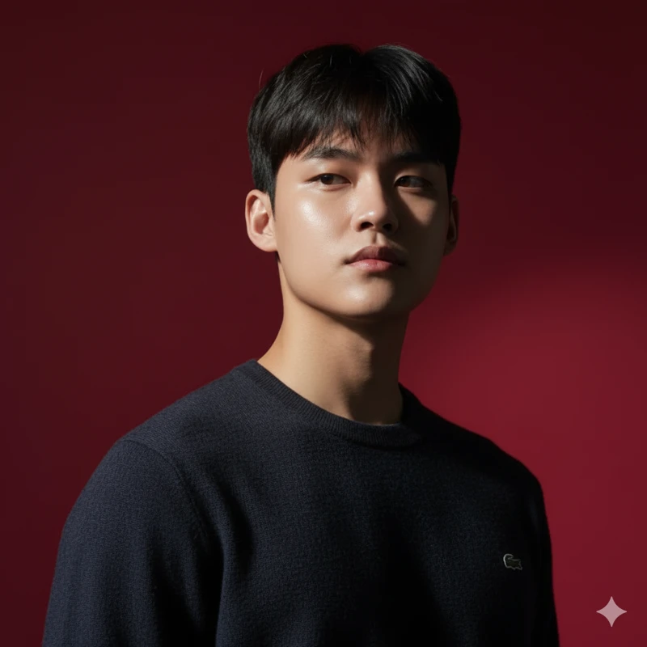

BILLDERS / IDEA FINDER
나에게 맞는 사업아이템 찾기
WORKFLOW
고객 입력→n8n→AI 아이템 탐색
Railway 배포 · 웹훅 연결BUSINESS · AI BUILDING2026
Billders아이디어 탐색을 고객의 첫 경험으로
AI 교육사업을 기획·판매·운영하며, 사업아이템을 탐색하는 AI 랜딩과 n8n 백엔드 흐름을 직접 만들었습니다.
OH JEONGHYEOP · AI PRODUCT BUILDER
고객의 요구를 기능으로 정리하고, 화면·데이터·워크플로로 구현합니다. 프론트엔드 개발을 바탕으로 서비스 제작, 교육팀 자동화, AI 교육사업 운영을 함께 해왔습니다.
기획 · 구현 · 운영
AI 교육사업을 기획·판매·운영하며, 사업아이템을 탐색하는 AI 랜딩과 n8n 백엔드 흐름을 직접 만들었습니다.
ERDCloud · Supabase · Claude
의사·변호사·사업자 고객의 요구를 정리하고, AI로 만든 화면에 데이터와 기능을 연결해 배포와 사용을 지원했습니다.
직접 운영하던 교육 플랫폼에 수강 정보 대시보드와 인증 기능을 더하고, Supabase로 데이터를 연결했습니다.
n8n과 Slack으로 교육 문의 알림을 구현하고, 문서 작성·요약 작업을 n8n 워크플로로 처리했습니다.
# 가장 많이 팔린 상품은?
best_seller = max(
products,
key=lambda x: x[3]
)학습자의 수준에 맞춰 수업과 실습을 조정하고, 대상 사용자·구현 범위·오류 해결을 중심으로 프로젝트를 멘토링했습니다.
교육과 멘토링 보기초기 스타트업에서 교육 플랫폼을 고치고, 고객의 서비스를 만들고, AI 교육사업을 운영했습니다. 교육팀에서는 n8n과 Slack으로 문의 알림을 연결하고 문서 작성·요약 워크플로를 구동했습니다. 무엇을 만들지 함께 정하는 일부터 배포 후 오류를 고치는 일, 사용법을 설명하는 일까지 맡았습니다.
React·TypeScript로 사용자 화면과 관리자 화면, 공통 컴포넌트를 개발했습니다. Docker·Git·GitHub Actions를 활용한 협업 경험이 있습니다.

교육 플랫폼·외주 프론트엔드 개발, 고객 서비스 제작 지원, 교육팀 n8n 자동화, AI 교육사업 기획·판매·운영
기관 대상 AI 활용 교육과 Python·데이터 분석 교안 제작, 실습·프로젝트 지원
고객의 목적과 제약을 듣고 필요한 기능과 구현 범위를 정리합니다.
화면, 데이터, 워크플로를 연결하고 실제 동작을 확인합니다.
고객과 학습자의 수준에 맞춰 설명하고, 제작과 활용 과정의 막힘을 풉니다.
기획부터 구현까지,
함께 풀고 싶은 문제가 있다면.